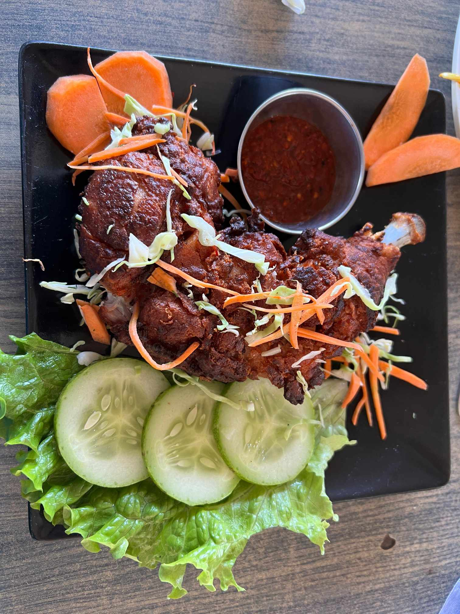

Old House, The Balcony of Kathmandu

Veg Momo Platter

Chicken Chilly
Chicken Leg Piece

Mustang Aloo
Purano Naikap, Syuchatar Road, Kathmandu
Not every dining experience is a memorable one. Tried Old House, but sadly, the food didn’t meet the mark. The Small Nanglo Veg Momo was just average, Mustang Aloo half uncooked, and the Chicken Chilly? Both taste and quality fell short. The Chicken Leg Piece lacked flavor entirely. Hoping for better days and better plates